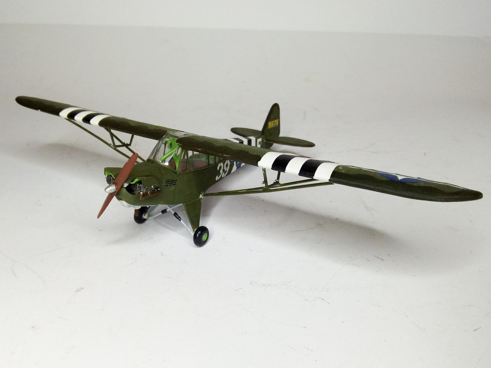
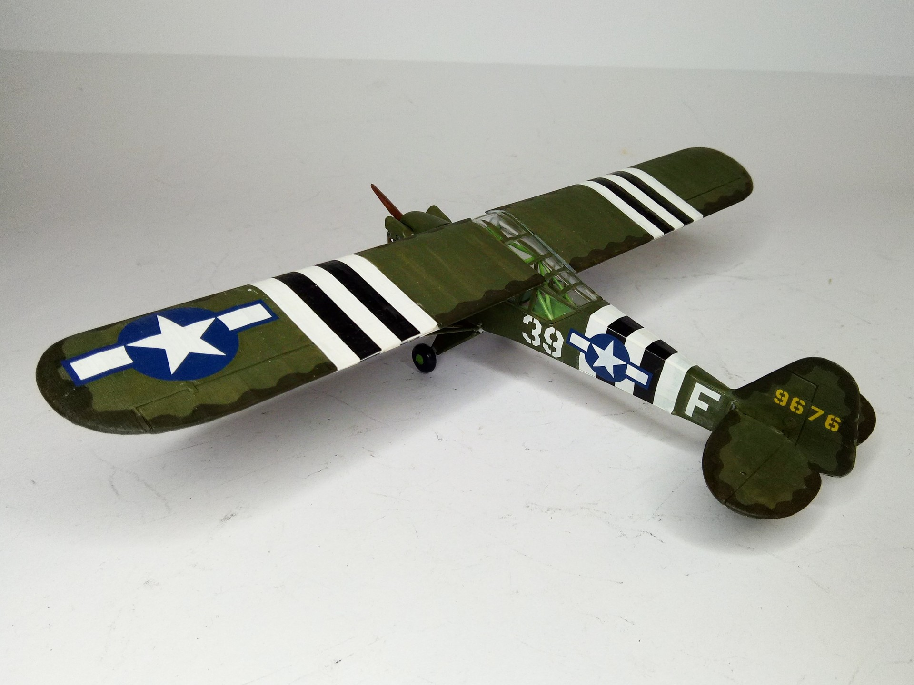

Aerei · scale model archive
Piper L4 Cub
Piper L4 Cub — Kit: SMER, Scale: 1/48. 9676/39-F Juni 1944 World War 2»Operation Overlord - Normandy FR #1748 #SMER #Piper L4 #Cub

Photo gallery

English description
9676/39-F Juni 1944 World War 2»Operation Overlord - Normandy FR
#1748 #SMER #Piper L4 #Cub
Descrizione italiana
9676/39-F, giugno 1944, Seconda guerra mondiale, Operazione Overlord, Normandia, Francia.